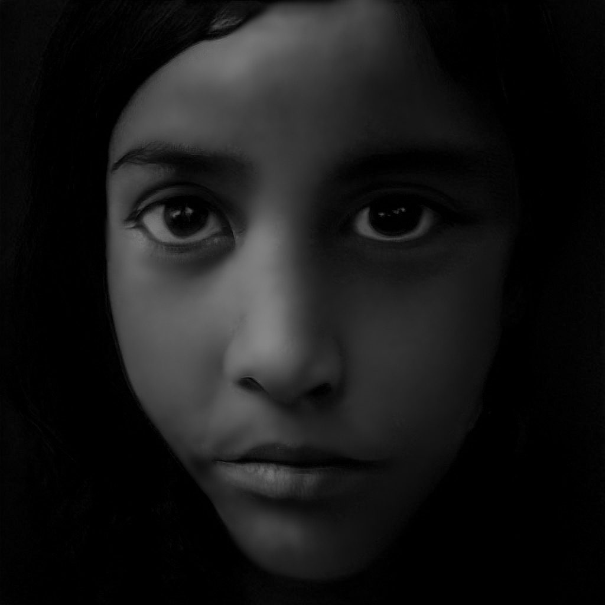
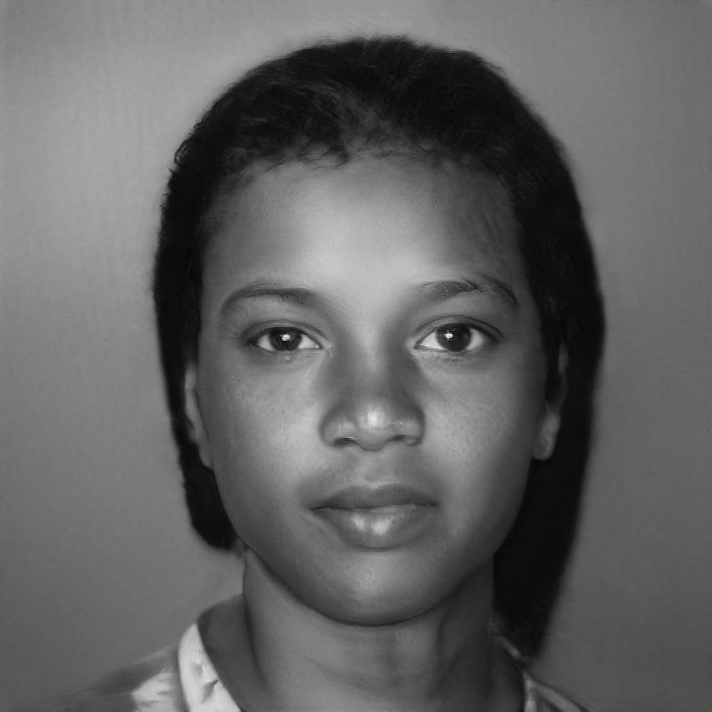

Immigrant or Expat?
Two words with almost the same dictionary definition. Two GANs, one trained on Flickr images tagged “immigrant”, one on images tagged “expat”, generate portraits for each. Side by side, they show how language, media and our own experience of the world shape the images we attach to words.



